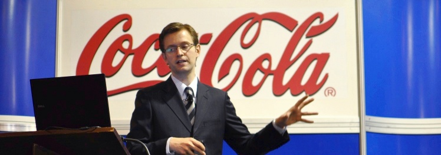

Flexible 3-D Modeling as a Key Technology for the Breakthrough of RoboticsExtended abstract of my plenary talk at the 8th International Symposium of Mechatronics Engineering "Automatización y Tecnología 6." |
Scientists strive to maximize the immediate performance improvement in their particular fields of expertise. This maximum efficiency paradigm achieves significant improvements in a short period of time and leads to cutting-edge technologies and highly specialized devices. Ambitious technological goals however, like those enabling groundbreaking new industries like service robotics, invariably call for a wide range of technologies. These often turn out to be mutually restricting. Furthermore those higher goals may impose fundamental constraints like reduced cost, smaller size or lower weight. These were often not even considered during the development of the required technologies following the maximum efficiency paradigm.
In contrast to efficiency, the focus of effectiveness is on the achievement as such, e.g. on a clear sociotechnical or industrial goal. Effective research calls for foresight, possibly at the expense of initial performance or resulting in a prolonged development. In this talk we claim that reaching ambitious goals, such as achieving critical mass in the service robotics industry, requires a maximum effectiveness approach. We term this the maximum effectiveness paradigm. We focus on visual perception for service robotics, specifically on the realization of perception systems in compliance with the maximum effectiveness paradigm.
Visual perception is the process by which visual sensory information about the environment is received and interpreted, and it is key to achieving truly autonomous robots. Visual perception does not necessarily reveal a geometric 3-D model of the scene. It is however believed that the formation of 3-D models is essential to solve a considerable number of the remaining challenges on visual perception. For many years, specialists have pushed diligently forward on 3-D modeling quality following the maximum efficiency paradigm, which has proved beneficial in many areas. This however critically misled roboticists into using the same sensors. For instance, many robotics labs around the world invested in armies of tiny service robots carrying around massive laser-range scanners or external (or externally referenced) 3-D sensors. These may deliver accurate, robust data, but are clearly not the kind of sensors (and sensory information) that will ultimately push service robotics in overarching success. Furthermore these approaches provably diverted research efforts away from more foresighted approaches. Recent years of research on vision-based, real-time simultaneous localization and mapping (visual SLAM) using only one camera are a much-anticipated break from previous approaches, despite some initial loss in accuracy. The latter approach using monocular vision does comply with the maximum effectiveness paradigm.
In our view, the service robotics industry will only achieve critical mass and become widespread if perception systems are realized following the maximum effectiveness paradigm. The following guidelines apply:
- Holistic design (multiple kinds of data, ranges, or sensors)
- High amount of information
- Avoidance of movable parts
- Passive operation with respect to the environment
- Modularity / operation autonomy / flexibility
- Small size
- Light weight
- Low cost
- Low consumption
- High data rate
- Less concern on the computational requirements ("softwarization" of hardware)
Going back to the last example on SLAM, the older use of laser-range scanners did not fulfill any of these criteria but the last one in part. Today, the use of digital cameras instead of scanners is an attractive option as it meets all these criteria.
The final success of service robotics is still subject to more general conditions: software sharing/standardization, long-term commitment, share of ideas (publications), and adequate funding (public/private).
More specifically, in this talk I shall detail concepts, sensor systems, and algorithms that are widely required for the development of this kind of perception systems:
- Multisensory capability enables holistic sensing and reduces costs.
- Exact modeling of sensors is about finding complete, non-redundant sensor models.
- Accurate parametrization: joint calibration of cameras and further sensors.
- Robust operation of sensors: software as the other half of sensors.
- Accurate, image-based (passive) egomotion estimation as the most flexible option for data registration.
At the same time and as an example for the realization of such a system, the multisensory perception system DLR 3-D Modeler developed at our institute will be explained in detail. Due to its flexibility, the DLR 3-D Modeler has already been deployed in many applications:
- Hand-guided 3-D modeling device
- Robot work cell autonomous exploration
- Perception system of the humanoid robot Justin
- Hazard detection system (HazCam) for the ExoMars rover of the European Space Agency
- Sensing unit for automated mounting of car wheels (concepts and algorithms)
- 3-D modeling from aerial images (concepts and algorithms)
- Supporting system for the kinematic calibration of robots
- Patient registration in medical preoperative planning
The main part of this work received a best paper finalist award at the 2009 IEEE/RSJ International Conference on Intelligent Robots and Systems (IROS 2009).

Klaus Strobl is a research scientist at the Institute of Robotics and Mechatronics of the German Aerospace Center (DLR) in Oberpfaffenhofen, Germany, since December 2002. His research interests focus on computer vision, 3-D graphics, camera calibration, and mobile robotics. Klaus studied electrical engineering (automatic control) at the Universidad de Navarra (Spain), the Vienna University of Technology (Austria), the Technische Universität München (Germany), and the Norwegian University of Science and Technology (Norway). He also held a visiting researcher position at the Department of Computing, Imperial College London in 2009, which led to a best paper finalist award at the 2009 IEEE/RSJ International Conference on Intelligent Robots and Systems (IROS 2009) for his work on efficient pose estimation from images. He is regular reviewer for the main international conferences and journals on robotics, e.g. IEEE Transactions on Robotics, IEEE Transactions on Automation Science and Engineering, and IEEE Robotics and Automation Magazine.
Further information: www.klaustro.com